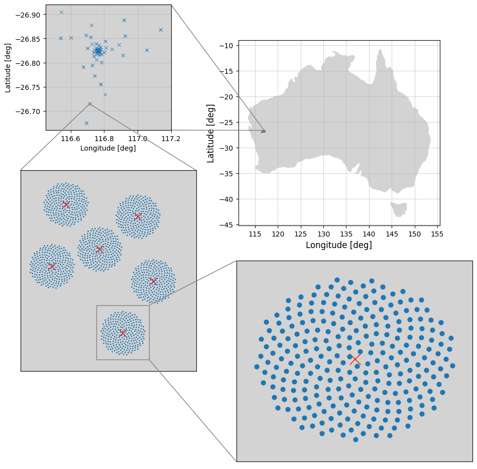

About Me
My main focus is the study of the Epoch of Reionization (EoR) and Post-Reionization (Post-EoR). Using Radiative Transfer codes combined with hydrodynamical N-body simulations, I model the formation of primordial ionizing sources to understand how they influenced the cosmological 21-cm signal during and after reionization.
I am also interested in instrumental simulations of the 21-cm signal to qualitatively understand the observational response of radio interferometry experiments, such as the Low-Frequency Array (LOFAR) and the Square Kilometre Array (SKA).
My research also includes the application of Artificial Intelligence (AI) techniques to accelerate and enhance numerical simulations, improve cosmological and astrophysical inference, and mitigate foreground contamination in radio interferometry for 21-cm observations.
I have been a member of the SKA Swiss Consortium (SKACH) since Switzerland became a member of the SKA Observatory in 2021.
Research
List of projects that I took part or that are still going on.
DECI-14: Recombination
Modelling inhomogeneous clumping factor for subgrid recombination
Modelling inhomogeneous clumping factor for subgrid recombination

AI with 21cm
Detect and recover 21-cm from SKA-Low tomographic images
Detect and recover 21-cm from SKA-Low tomographic images

from EoR to Post-EoR
Simulating the 21-cm signal transitioning from EoR to Post-EoR
Simulating the 21-cm signal transitioning from EoR to Post-EoR

SKA Data Challenge 3
Results from the SKACH team partecipating at the Foreground challenge
Results from the SKACH team partecipating at the Foreground challenge
Updated: Dec, 2th 2024
Experience
PostDoc in Astrophysics
2024 - to date
Eidgenössische Technische Hochschule Zürich (ETHZ), Switzerland
Project title: "Accellerate Radiative Transfer simulation for SKA"
PostDoc in Astrophysics
2021 - 2024
Ecole Polytecnique de Lausanne (EPFL), Switzerland
• Development of the SERENEt neural network to mitigate foreground contamination in 21-cm tomographic observations.
• Development of a flexible and GPU-accelerated Radiative Transfer (RT) algorithm.
• Development of Physics-Informed Neural Network (PINN) to accelerate and improve Epoch of Reionization (EoR) simulations.
Doctorate in Astrophysics
2017 - 2021
University of Sussex, United Kingdom (Link to my thesis)
• Developed a Deep Learning approach for the detection of neutral hydrogen regions in 21-cm tomographic images of SKA-Low.
Master Degree in Astrophysics
2015 - 2017
Ludwig-Maximillians-University LMU Munich, Germany (Link to my thesis)
Bachelor of Science in Physics & Mathematics
2011 - 2014


{kind=link}
{kind=link}
{kind=link}
{kind=link}
{kind=link}
{kind=link}
{kind=link}
{kind=link}
{kind=link}
{kind=link}
{kind=link}
{kind=link}
{kind=link}
{kind=link}
{kind=link}
{kind=link}
{kind=link}